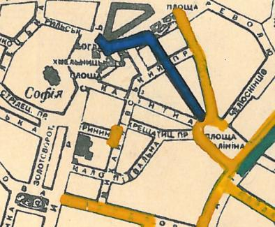

Планы на посещение и проверку
Планы идей подземных изысканий
ПНШ - Поиск новых штолен
NEEDSMOREINVEST - объект был посещен, но требует дальнейших полевых изысканий
Table of Contents
- 1. Киев
- 1.1. Коллектора
- 1.1.1. Клов
- 1.1.2. ЛЫБИДЬ-троллдепо
- 1.1.3. Ореховатка
- 1.1.4. PLANED Канал Вовкуватой затоки Проверка
- 1.1.5. PLANED Улитка Проверка
- 1.1.6. Совка
- 1.1.7. Неводничи
- 1.1.8. Источная
- 1.1.9. Нивка
- 1.1.10. Мокрая
- 1.1.11. NEEDSMOREINVEST Ямской поток ул Федорова Допройти
- 1.1.12. Песчаный
- 1.1.13. Бабий яр и Кирилловский
- 1.1.14. Бусловка
- 1.1.15. Коллектора русановского канала
- 1.1.16. Дарничанка
- 1.1.17. Глубокий яр
- 1.1.18. Сырец
- 1.1.19. PLANED Мышеловский
- 1.1.20. PLANED Китаевский
- 1.1.21. VISITED Коллектор на Моторном переулке
- 1.2. Дренажи
- 1.3. Коммунальники
- 1.4. Канализация
- 1.4.1. PLANED Закольцованный фекальник на Куреневке
- 1.4.2. NEEDSMOREINVEST Камера Скоморошского фекальника
- 1.4.3. VISITED выйти из Императорской в подсушенный ГКК
- 1.4.4. NEEDSMOREINVEST Стволы на Глубочицкой
- 1.4.5. PLANED ул.Коллекторная
- 1.4.6. PLANED ствол на Феодосийской
- 1.4.7. PLANED начало Новолыбедского
- 1.1. Коллектора
- 2. Не Киев
1 Киев
1.1 Коллектора
1.1.1 Клов
VISITED Луга
Обследована сверху, начиная от непролазных труб. Попытки найти более широки куски в верховьях по дневной поверхности не увенчались успехом.
- PLANED Труба под Пушкинскую
Во время прохождения Луги я сползал в ответвление под ул.Пушкинскую. Через несколько колодцев трубы Ø0.8 было характерное перепадное устройство с гранитными блоками и далее суoхая труба, замытая более чем на половину, однако было видно, что замыв понижается.
Предполагаю, что еще некоторое время можно ползти, не исключено что будут какие-то исторические куски или подключки со дворов
UPD 07.12.2017: По карте Ф.1, оп.30, спр.780 Пушкинская принимает в себя верхнюю часть Прорезной. А 50ка в Клове это только нижний кусок Прорезной. Кусок Прорезная-Пушкинская отмечен как построенный до 1947г. На Прорезной имеются старинный чугунные ливневки
NEEDSMOREINVEST Под Рогнединскую map
{kind=link}
На повороте коллектора на углу Рогнединской и Большой Васильковской под дорогу уходит сухая металлическая труба Ø0.5 из которо пахло теплотрассой. По карте нельзя утверждать, что это слив из Мандарина, однако на практике возможно все.
UPD 25.03.2018 Труба оказалась ø400, что затрудняло передвижение по ней. К тому же, из-за снеготаянья из нее тек слабенькй ручеек. В то же время, в свете мощного фонаря удалось разглядеть изменение геометрии, похожее уже на трубы теплотрассы на растоянии где-то 20 метров. Принято решение найти это место с Мандарина и дождаться сухой погоды.
NEEDSMOREINVEST Труба "Запах газа"
Требуется ползти, труба перегорожена коробами с оптикой
PLANED Истоки под музейный, развилка в обе стороны Допройти
Во время прохождения вверх от Европейки с Р*****ом мы дошли до двух труб Ø0.6, расходившихся под углом. Пройдя по трубе каждый в своем направлении, ничего необычного мы не увидели. Я дополз до колодца с большим количеством вкарстовавшегося железного мусора на дне, что тогда заставило задуматься о близости дренажки.
NEEDSMOREINVEST Под Печерский рынок Wikimapia
В указаном месте находится ливневка в трубу Ø0.8 или Ø1, нами с М**ом по поверхности было отслежено русло вплоть до печерского рынка во время поисков аварий теплотрассы. В сторону основного русла клова эта труба не пройдена.
Из рельефа предполагаю наличие там перепадных камер
UPD: 2017.02.04 Пройден частично от котлована на Леси Украинки вверх до трубы Ø0.6 (вероятно под стадионом)
PLANED Проверить в сторону госпиталя Проверка
В р-не cтройки находится высокая камера, необходимо проверить наличие сливов со стороны госпитального укрепления, т.к. в р-не вала находится большое количество ливневок и некоторые из них шумят.
NEEDSMOREINVEST Завал из песка в яйце под Майданом Допройти
в участке под Майданом прокопать песчаный завал вверх и попробовать проползти дальше
UPD 04.08.2017 даллее следует завал, есть труба 0.5, предположительно в сторону Переулка Шевченка. Стоит попробовать пройти сверху
NEEDSMOREINVEST Софийский исток - ул. Малоподвальная ATTACH
25.03.18 Пройден до конца кирпичной канавы + одна труба. Далее разобран завал из двух люков, но в ил мы уже не двинулись. Планируется вернуться по поверхности, закинуться в канаву (предположительно под парком) и допройти.

Figure 1: синее - 1947 год постройки
1.1.2 ЛЫБИДЬ-троллдепо
VISITED На територии завода были замечены трубы (2015г). :: Предполагается что коллектор будут достраивать.
Коллектор действительно достроили в сторону Филатова. Новые трубы Ø1000-800 с мусором и водопроводными шлангами внутри
1.1.3 Ореховатка
PLANED проверить наличие верхней части между пр. Науки и парками Проверка
PLANED Допройти нижнюю Допройти
PLANED Верхняя
PLANED Притоки в нижней
1.1.4 PLANED Канал Вовкуватой затоки Проверка
Проверить нет ли туда сливов-подключений
1.1.5 PLANED Улитка Проверка
Коллектор был перестроен, проверить изменения
1.1.6 Совка
PLANED Нижняя. Проверить шум воды за МАУПом ПНШ
PLANED Проверить впадающие перепадники в верхней Проверка
в частности - из-под ул. Колосковой
PLANED Слив с Крутогорной Допройти
PLANED Проверить кирпичный кусок под Радченка Проверка
1.1.7 Неводничи
PLANED Допройти Душегубицу Допройти
PLANED Соеденить в сторону Цитадельной Допройти
PLANED Проверить трубу со стороны автоколонны ПНШ
PLANED Проверить наклонные трубы в низовьях Допройти
PLANED В сторону Лейпцигской Допройти
1.1.8 Источная
PLANED Допройти Источную далее в сторону Лепсе
PLANED На север, в сторону Машиностроительной
1.1.9 Нивка
VISITED Озера На воинской части Проверка
пройден. Коллектор Диверсионный
PLANED Коллектор реки Жуляны тыц
PLANED Допрохождение Желани под водонасоску
PLANED Допрохождение приток Диверсионного в сторону Поста Волынского
PLANED Допрохождение притока под Якутской
PLANED Допрохождение Диверсионного под Лепсе
KNOWN Проверить сток с озер в урочище Совки тыц Проверка
Это пойденый уже коллектор 101
1.1.10 Мокрая
PLANED Под парк Допройти
PLANED Под Воздухофлотский Допройти
PLANED Проверить район Кучминого яра ПНШ
1.1.11 NEEDSMOREINVEST Ямской поток ул Федорова Допройти
Восхождение до труб 0.5 в р-н Б.Васильковской. Необходимо так же продергать люки в р-не Госпитальной
PLANED Отдельным пунктом - огромный чугунный люк в Госпитальном укреплении. Он же должен куда-то сливаться
1.1.12 Песчаный
PLANED Верхний песчаный
PLANED Нижний песчаный
VISITED Проверить информацию о кирпичном коллекторе под ул. Шулявской
Была система, которую в последствии заменил Пещаный. Шла почти паралельно, старая кладка была крайне приятной. Был бассейн под ТММовским домом, который при строительстве не дестроили, а использовали для усиления фундамента. НЯП остался небольшой отрезок старой кладки от ванды до старокиевской - все новые дома (общага старокиевская 6/8), ванда с аркой (там де песчаный сейчас течет) и т.д. его перерезала и дестроила. вот тут на детской площадке был люк со входом именно в эту систему. Потом ХЗ почему на него сверху кинули бетонный блок А фекал там самотек рядышком тоже есть, тек в лыбедской коллектор (старый), потом его же использовали для новолыбедского коллектора. Лет 8 назад был слегка в акуе, когда водоканал менял трубу - выкапывали керамическую трубу дета 0.5 в диаметре и метр длинной, на фланцах. Трубы лежали на кирпичной подушке. Заменили на железную трубу. Копали тут – TANK
1.1.13 Бабий яр и Кирилловский
NEEDSMOREINVEST Истоки бабьего яра от "Хода йога" и выше
PLANED Истоки Кирилловского в сторону Стратегического
PLANED Истоки Кирилловского в сторону **
1.1.14 Бусловка
PLANED Истоки
VISITED Трубы, впадающие с севера в низовьях
Оказались очень коротким притоком, далее забранным в непроходимые трубы
1.1.15 Коллектора русановского канала
PLANED Водобойный
PLANED Стеклобойный
PLANED ст.софия труба Проверка
1.1.16 Дарничанка
PLANED Проверка в р-не ДТЭЦ для Киевэнерго вверх на Черниговскую Проверка
PLANED Воскресенский с лодками
PLANED Допройти Лесной
1.1.18 Сырец
р. Рубежовский
- PLANED Георамина
Требуется пройти истоки от ул. Эстонской до пр. Победы под Щербакова
- VISITED Рубежовский
Пройден от платформы до ул.Сикорского
Представляет из себя сначала трубу 1.2 от Брест-Литовского проспекта с коротким участком штольни вдоль ЖД платформы и дальнейшей трубой 1.2 до озер. Там труба вливается в лоток, идущий от Георамины и далее коллектор идет в коробе 2х2 до ул. Сикорского, проходя в узком тоннеле под дорогой под ЖД мостом. Коллектор выходит в частном секторе. Далее идет канавой, не исследован.
PLANED р.Рогостинка? Труба под ул. Северно-Сырецкая Проверка
На ул. Сырецкой, на том уже участке, где она заметно наклонена в направлении к реке и рельсам - посреди дороги люк. Не только крышки нет, но и коцнутая обойма разом с прилегающим асфальтом. Внизу на удивление немалая труба (1,2-1,5) и обширная перепадная камера, сквозь которую ещё и какой-то трубопровод - он будет бит, если чё большое в люк свалится. Нехожено, кстати.
Найти просто: от конечной 5-го троллейбуса идти по улице, по которой он приехал - в том же направлении. Улица станет наклоняться. Слева лесопарк, справа что-то типа АТП и военного склада. Тут и он, тупо посреди дороги. Чуть назад - 2 ливнёвки. Улица через несколько дес. м сменяется пешеходной грубоасфальтированной тропкой, что сходит к рельсам. Рядом с ней фекальная магистраль есть, говна бурлят слышно. По ту сторону рельс подходит ул. Сырецкая и заметно дальше течёт Сырец. Значит, эта система проходит под рельсами, под частным сектором, возможно и под фекальником (возможен гейт), впадает в Сырец порталом - короче, вкусная.
1.1.19 PLANED Мышеловский
1.1.20 PLANED Китаевский
1.1.21 VISITED Коллектор на Моторном переулке
Посещен, оказался не очень длинной трубой не стандартного диаметра, порядка 1.4. В верховьях существует, по всей видимости авария, из-за которой по коллектору, в т.ч и по открытому руслу течет говно. Проблема уровня Совских прудов.
1.2 Дренажи
1.2.1 PLANED ГСБЖ
1.2.2 NEEDSMOREINVEST Штольня из отчета СУППРА ::facebook ПНШ
Определено место - Богуславский спуск, операция по поверхности не нашла там штолен, одна сам люк не проверялся.
Вероятнее всего это система водоотводов из непроходного дренажа
1.2.3 VISITED Штольни за Музеем живописи ::видео так же найден фильтр на заднем дворе ПНШ
Найдены короткие (1.5-2м) потерны в смотровые колодцы дренажа земплеупорной стены. Фильтр оказался водомерной скв. выполняющей ту же
1.2.4 PLANED Форметовский спуск и район за МАУПом ПНШ
1.2.5 King speleo
NEEDSMOREINVEST ДШС-19 - откуда льет вода в 3х уровневом колодце? Допройти
2017.08.10
Короче немного по сегодняшней вылазке: Прошлись вдоль 5ти колодцев ДШС 19 (часть Кинг Спелео) вдоль дороги, забросили внутрь пикеты. Внутри оказалось что пикеты не попали в ряд колодцев, следовательно они сверху засыпаны. В интересующем нас колодце удалось рассмотреть вверху немногое, видно что есть небольшое смещение блоков отнросительно друг лруга и сверху херачит сильный поток воды. Есть серьезные основания предполагать, что там скрывается кусок штольни.
Требуется допрохождение в формате SRT. Или отттопить колодец и по поверхности привязать или попытаться найти своими силами. Далее нужно сместить крышку и устроить спуск.
PLANED ДШС Козловская
По схеме Ф.1, оп.30, спр.780 под дорогой ливневка постройки до 47г. Необходимо проверить слив с ДШС (ø800-1000). Рядом замечены чугунные ливники.
1.3 Коммунальники
1.3.1 PLANED Коммунальники на академ городке тут
1.3.2 PLANED Проверка Бережанского рынка Проверка
1.3.3 PLANED На Ивашкевича
1.3.4 PLANED Квитневый
1.3.5 PLANED Поиск на ДТЭЦ
1.3.6 PLANED Странная дверца на Телиги
1.3.7 PLANED СИЗО
1.3.8 PLANED Печерский
1.4 Канализация
1.4.1 PLANED Закольцованный фекальник на Куреневке
1.4.2 NEEDSMOREINVEST Камера Скоморошского фекальника
А самое интересное (по рассказам, сам не лазил) от тут там стоял первый дюкер лыбедского колектора, наверху докуа люков и ямы в дороге, но што внизу - ХЗ. – TANK
Требуется дальнейшая допроверка, нашли небольшую отключенную ветвь и новодельный перепад
1.4.3 VISITED выйти из Императорской в подсушенный ГКК
2018.04.02 Посещено, вышли в ГКК, но течение и условия там оспасные
1.4.4 NEEDSMOREINVEST Стволы на Глубочицкой
2018.05.23 Посетили стволы нового ГКК 9, 9/1, 9/2. Из перепадки, где есть выход в старый слив, прошли недалеков сторону старого ГКК UPD 2018.05.30 нашли старый ствол на поврехности, увы он соединяется с ГКК через дырку в потолке последнего. Стоит навестится, в ГКК вода стоит